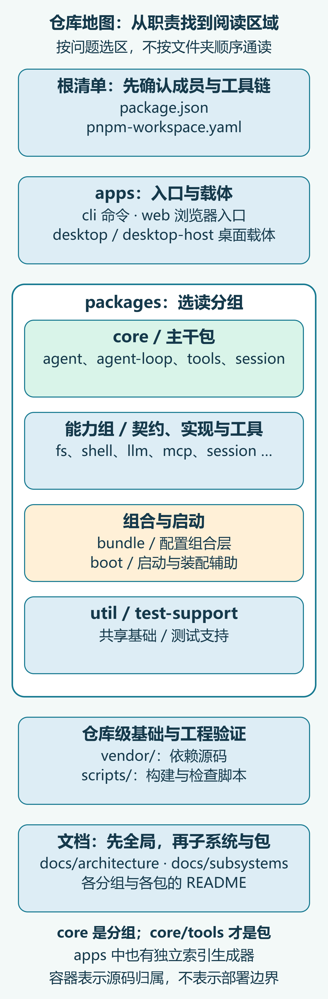
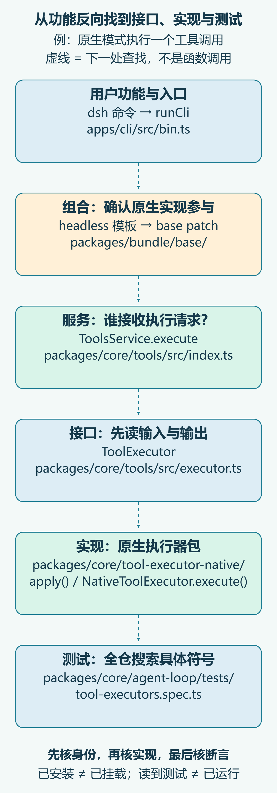
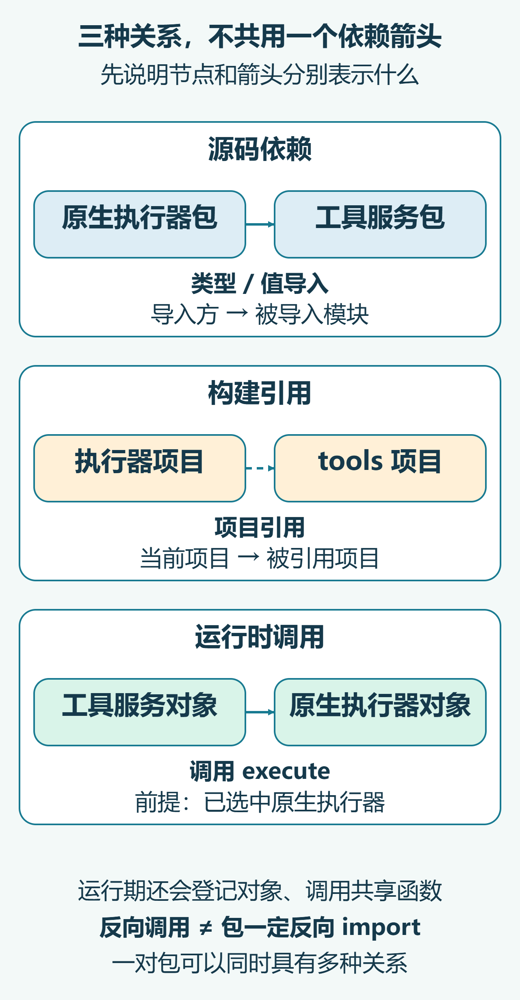

H02 作者审阅页 · 未发布。实际 LessonMarkdown 的静态渲染，折叠答案可展开；课程版本的复制交互已另经 React 挂载测试。图片在本页映射为相邻文件，不改变教材的 /course-media 路径。
从零读懂 DeepSeek Harness 仓库结构
90～120 分钟（可选语法补课另计 10～15 分钟）
打开仓库后，第一步不必点开第一个文件
H01 留下了一张六行职责地图：创建、循环、提示词、模型、工具、会话。现在打开 DeepSeek Harness，packages/ 下却有几十个能力分组。就算记住每个文件夹，也还不能回答：模型提出一个普通工具调用后，哪块代码负责选择执行器？想核对它，测试又在哪里？
这节课沿着原生模式执行工具调用这项真实能力，练习一套查找方法。原生模式在这里指把可见工具直接呈现为模型可调用的工具，再执行其调用；它不等于操作系统原生代码。我们只追踪代码归属与连接处，不提前拆解执行流水线。
课末要交出两样东西：一条“功能→入口→组合→接口与实现→测试”的阅读路线，以及一张带关系类型的图。目录名称只是起点，每一步都要有证据。
本课继续锁定提交版本（Commit）f3803c96974ad4a94195fb97e5c637e9c2a3afe3。官方实现附固定源码依据；教学简化是帮助辨认结构的小例子；我们的分析用于讨论收益与代价。仓库仍是未经安全审计的开发者预览，安全说明的边界没有因本课通过测试而改变。
先找回你已经用过的工程习惯
Stage 1 修改统计文字时，你先从页面现象找到组件，再对照实际改动。package.json 告诉你项目叫什么、依赖什么、可以运行哪些任务；npm run dev 只是执行其中定义的任务，并不是所有项目都固定用同一条启动程序。
Stage 2 把页面、API、服务端与数据库分开；Stage 3 又把调用模型供应商的代码放在服务端模块里；Stage 4 将模型提议、执行程序与工具分工。你已经见过“功能散在多个文件中”的情况。本课把查找尺度从一个应用扩大到多个包。
先用一句话复习：目录帮助定位，模块组织代码，导入连接模块，调用描述某次运行做了什么。 一个文件导入另一个文件，不代表导入时已经执行了它的每个函数。
想深入再看：基础回顾：只补本课要用的六件事
项目根目录是这份项目的外层目录，不是电脑桌面；看完整路径和 package.json，避免打开两份同名项目。模块通常是有自己导入、导出的代码文件。export 把符号开放出去，import 让其他模块使用它；有时中间还有一个入口文件转导出。
package.json 中，name 是包身份，exports 规定可导入入口，bin 声明命令入口，scripts 是开发任务，依赖字段声明所需代码包。依赖已安装，不表示对应插件已挂载。前端代码在浏览器中运行，服务端程序在宿主运行环境中处理请求；同一台电脑也能同时承担这两个角色。
TypeScript 接口是类型检查时的形状约定，不是实际工作的对象，也不会自动检查网络输入。前几阶段说的 API 接口约定请求和响应，这里的 interface 则约定代码中值的形状，两个“接口”不要混淆。前四阶段重在使用这些工程结构，没有系统教授接口语法；下一折叠区会补读源码所需的最小符号。
已有权限时可回看 1.4 从页面找到代码、2.1 前端与服务端分工、3.1 服务端 Provider 模块。原课入口沿用原有权限，不影响你靠本课继续。
想深入再看：可选补课：读懂 import type、interface 与 implements
先想一个小问题：收据查看器只需要知道“收据有一段文字”，它是否必须知道收据由哪家打印机生成？
下面是教学简化，不是 Harness API，也不需要运行。第一份文件只约定形状并提供一个普通函数：
// receipt.ts
export interface Receipt { text: string }
export function renderReceipt(value: Receipt) { return value.text }第二份文件借用它们：
// printer.ts
import type { Receipt } from './receipt'
import { renderReceipt } from './receipt'
class PaperReceipt implements Receipt { text = '打印完成' }
const result = renderReceipt(new PaperReceipt())import type 只把类型带进来，发射 JavaScript 时会移除；普通导入中的 renderReceipt 是程序实际使用的函数。implements Receipt 要求类在类型上满足约定；它不会替你打印收据，也不提供运行时鉴权。new PaperReceipt() 才创建对象，renderReceipt(...) 才调用函数。
类比到此为止：接口不是一张运行中会自动盖章的纸。本课真实的 NativeToolExecutor implements ToolExecutor 也要与构造、注册和调用分开读。检查自己：如果只看到一行 import type { ToolExecutor }，能否断言“执行器已经被创建”？不能；还要找创建与挂载代码。
一座园区，不是一个大房间：Monorepo、Workspace 与 Package
如果命令行、网页界面和工具能力都放在不同仓库，修改公共接口后，需要分别协调它们的版本。另一种办法是把相关项目放进同一个版本库，保留各自的边界，再统一组织开发工具。这种多项目共同维护的仓库，称为 Monorepo（单仓库多项目）。
可以把它想成同一座园区里的多个部门：有共同的地图和管理制度，每个部门仍有自己的名称、入口与职责。严格地说，Monorepo 描述代码的版本管理组织方式，不要求所有项目发布成一个包，也不意味着每个目录都是一个独立服务。
**官方实现：**先打开根 package.json 的 1–18 行。它是私有根包，固定 pnpm@11.28.5、Node.js >=24.9.0，并列出 vendor/*、packages/*/*、apps/* 等成员模式。再打开 pnpm-workspace.yaml 的 1–15 行，看 pnpm 实际收集的工作区成员。不要在自己的 Stage 项目中照抄这些依赖或安装命令；本课只读它们。
**Workspace（包管理工作区）**解决的是“哪些本地项目一起参与包解析和依赖管理”。在这个语境中，它是 pnpm 管理的一组成员包；像园区管理册，指明哪些部门归这套管理规则。注意 Harness 业务里也有名为 workspace 的用户工作目录概念，本节的包管理 workspace 不是那个实体。
两份成员清单并不逐字相同：pnpm 文件还显式包括 benchmarks 和 python/sdk-runtime。因此，只读根清单就宣称列出了全部 pnpm 成员，会漏项。两份文件各自记录什么，要以真实字段为准，不能靠文件名猜。
**Package（包）**是具有包元数据与入口约定的代码组织单元。它像部门自己的名称牌和办事窗口：文件夹地址与公开身份可以不同。在本仓库中，packages/core 是能力分组，packages/core/tools 才是其中一个包。官方包地图明确按 packages/<分组>/<包> 组织，包清单是核身份的依据。
例如，原生执行器的包清单声明名字为 @deepseek-ai/dsh-tool-executor-native，默认入口指向 lib/index.js；源码却在 packages/core/tool-executor-native/src/index.ts。名称相似可以帮助搜索，但不能把删掉前缀后的文字直接拼成目录。
**我们的分析：**多包放在同一仓库，便于一起修改契约、消费方和测试；保留包边界又便于替换与复用。这解释了当前组织方式的工程价值，不是对作者所有历史选择的猜测。共同工具链也带来边界、依赖与生成产物维护成本，Monorepo 不会自动消除这些工作。
想深入再看：核对答案：匹配目录，还要核包清单
packages/core/tools 符合两级模式；packages/core 是分组。接着查看该目录的 package.json，确认 name、导出和职责；本地模式不是“任何匹配名字的目录都天然构成合法包”的保证。还要区分包管理工作区成员与实际启动时挂载的插件。
仓库地图要能回答“我该去哪一层找”
先读架构文档的核心包表，再看 packages/README.zh.md 的分组表。本节只记五种职责，不要求记住五十个组名。

| 你正在问什么 | 先查哪里，再核什么 |
|---|---|
| 命令从哪里进入，页面从哪里启动？ | apps/cli 的命令入口、apps/web 的浏览器入口；桌面壳与私有 Host 另有入口 |
| 循环、工具登记、提示词与历史归谁？ | packages/core/README.zh.md 的主干包表；agent 与 agent-loop 职责不同 |
| 一种工具能力或模型如何接入？ | 对应能力组 README，例如 fs、web、llm；再找定义、提供方或面向模型的工具包 |
| 这次启动到底装进哪些能力？ | packages/bundle 与 profile 组合；不能由“依赖已安装”推断“插件已启用” |
| 谁提供公共基础与工程核查？ | vendor、packages/util、packages/test-support、scripts；从开发文档及包清单核用途 |
上表以官方包分组表为索引。docs/architecture.zh.md 解释全局关系，docs/subsystems/ 解释某项机制，包自己的 README 则进一步说明用途、配置和限制。文档是进入代码的索引，不能用它替代对实现与测试的核对。
vendor/README.md还说明，这里保存仓库固定维护的 Cordis 及基础库源码。它与安装依赖后生成的 node_modules 不同；本课认出这块框架基础，不展开其维护流程。
这里需要分清“核心服务”和“具体能力”。官方core 表把会话、提示词、工具服务、Agent 接口和默认循环分开；llm 分组表又将共享模型服务与提供方适配器分开。某一组可以同时有接口、实现与消费者，不能把整组统称成一个适配器。
入口：程序从哪里接过控制权？
**Entry Point（入口）**解决“我要从哪个窗口进入这段行为”。像挂号台先把请求送到科室，入口通常先解析参数或建立运行环境，然后委托其他模块；业务实现不必都在入口里。
正式定义是：在某个运行场景下，程序或外部使用者首先进入的约定模块、导出或函数。入口有层级：命令入口、浏览器入口、包导出入口，不能只给整个仓库指定唯一的“第一行”。
官方实现：apps/cli/package.json 的 bin把 dsh 命令映射到构建后的 lib/bin.js；源码 apps/cli/src/bin.ts 的 runCli()解析参数，在 profile 模式动态导入 profile-boot.ts 并调用 runProfile。文件末尾才是在作为主模块运行时调用 runCli()。因此“导出一个函数”与“真正开始运行它”也要分别找。
浏览器侧则从 apps/web/index.html 的模块脚本进入 src/main.ts，再使用 dsh-client-web 的 AppWebEntry。这说明 apps/web 的入口不是整个服务端 Agent 的实现。
桌面版还有 Electron 壳的包入口，以及私有 Desktop Host 调用共享 profile runner的代码。此处只认出载体；安装与启动参数留 H04。
连 apps 也不能只凭名字下结论：插件市场索引生成器是独立 Node 程序，不是 Cordis Agent 应用。正确的问题始终是“这个入口负责什么”，不是“它住在 apps 里，所以一定负责什么”。
产物：有源码，为什么入口却指向 lib？
**Build Artifact（构建产物）**解决“开发时写的文件，怎样变成使用方实际加载的文件”。它像根据图纸加工出来的零件：有关联，但不是同一件东西。
技术上，构建产物是编译、打包或生成阶段输出的文件。前面的原生执行器清单把运行入口指向 lib/index.js，类型入口指向 lib/types/index.d.ts；apps/web 清单则说明浏览器应用通过 Vite 构建，交付 dist/。声明文件服务于类型检查，不能当作可执行逻辑。
在源码阅读时，tsconfig.base.json 的 paths帮助工具把仓库包名解析到源码，例如原生执行器和工具服务的映射。它是当前工具链的源码导航依据，不能据此断言任意 Node 进程都会自动按 paths 去加载 .ts。发布入口、编译配置与开发解析是不同约定。
检查自己：找不到本地 lib/index.js 时，是源码不存在，还是产物尚未生成？先看包清单和构建说明。本课定位练习只读源码，不需要为了得到产物而编译全仓，也不直接修改生成文件。
跟着一项功能，走出一条可验证的路线
现在的问题收紧为：在使用原生执行器的组合里，模型提出工具调用后，由谁接收和分派？如何找到能核对它的测试？
这条路线的箭头表示“接下来去哪里查”，不是把编译、启动和每次调用串成同一个函数栈。

第一步：确认场景和配置，不先搜索所有 execute
从 CLI 的入口模式确认，headless 是一次性任务 profile。这里只将它作为入口语境，不运行模型。随附模板为 headless 选择 dsh-base 与 dsh-headless；sdk-minimal 是不使用 base 的例外，不能将同一组合推广到所有入口。
再看 packages/bundle/base/package.json 的 dsh.bundle.patch，它指向 cordis.patch.yml。在该配置的 493–502 行，可以看到 dsh-tools、启用的原生执行器行，以及默认停用的另一种执行器。profile 是具名组装，bundle 是参与组装的配置层；本课只借它确认“哪些实现可能被装在一起”，不讲覆盖算法。
这一步排除了一个常见误解：某个包出现在依赖清单里，不足以证明这次运行选择了它。后续用户配置仍可能改组合或选择，所以我们的结论带着“已选中原生执行器”的前提。
第二步：用包身份找到接口，不把名字当路径
从原生执行器的包清单和源码映射找到 packages/core/tool-executor-native/src/index.ts。先读第 2–8 行：它导入 dsh-tools 的类型，并声明 NativeToolExecutor implements ToolExecutor。
此时先别一路向下读实现。沿 ToolExecutor 到 packages/core/tools/src/executor.ts 的接口，只认出两个方法：describe 负责模型能看到怎样的工具描述，execute 接受一批调用并返回批次结果。输入输出的完整状态约定后续再精读。
这里正好出现三个角色。**Service Definition（服务定义）**约定接口，**Provider（提供方）**提供实际实现，**Consumer（消费方）**使用能力。这里的提供方不限于模型服务商，原生执行器也是一种能力的提供方。像医院的诊疗约定、具体诊室与使用它的流程；类比仅用于分工，三个角色不要求刚好对应三个目录或三个进程。
在本例中，core/tools 定义执行器契约并提供工具服务，core/tool-executor-native 实现契约，默认 core/agent-loop 在工具分支消费 ctx.tools。同一个包可能承担不止一种角色，不能用“接口包只允许放 interface”来套源码。官方依赖约定明确要求扩展依赖服务定义，保持具体提供方可替换。
第三步：只读实现的连接处，暂不读算法
回到原生执行器源码，依次找三处：
describe()与execute()，15–20 行：前者把可见定义映射为模型工具描述，后者转交executeToolBatch。这不是一个独立重写的全部工具系统。inject与apply()，25–35 行：插件声明需要tools，挂载时创建执行器，并调用ctx.tools.setExecutor(...)。apply是模块导出的函数，不是类的静态方法。先理解为声明需求和登记实现；Cordis 如何等待依赖，留 H05。ToolsService.execute()，369–377 行：工具服务选择当前适用的执行器对象，再调用它的execute(input)。当选中原生执行器时，才到达刚才读到的方法。
这样，我们从“模型提出一个工具调用”走到了调用默认执行器的边界。参数校验、审批、调度与结果结算还在共享流水线里，本课不追进去。H13–H15 再逐段解释；现在的成果是知道下一次应打开哪个文件。
第四步：搜索具体符号，把测试也定位出来
不要只找包旁的 tests。在整个仓库搜索 NativeToolExecutor，会到达 packages/core/agent-loop/tests/tool-executors.spec.ts。其 setup 挂载真实工具服务与原生执行器，使用 Mock 模型并登记一个虚构 echo 工具。
再读 103–128 行的测试：同一个工具注册表用于不同执行器选择，断言模型在原生路径看到 echo，另一条路径看到另一种工具呈现。先找输入、挂载、执行与断言，而不是把测试函数的英文标题当成行为证明。
这份测试位于默认循环包中，因为它检查跨组件组合。找到它说明你找到了相关证据，不代表你已经运行它，更不代表所有工具行为都已被这一个用例覆盖。
想深入再看：想在本地查找：只用只读命令
已经持有固定 Commit 源码时，在那份源码的根目录运行下列搜索；没有本地源码，也可以使用正文的固定 GitHub 链接完成练习。无需装依赖或启动程序。
rg -n 'NativeToolExecutor' packages/core
rg -n 'interface ToolExecutor|setExecutor|selectExecutor' packages/core/tools/src
rg -n 'dsh-tool-executor-native|dsh-tools' tsconfig.base.json有匹配后只打开相关片段。搜索无结果时先核目录、Commit、拼写与文件范围，不立刻判断功能不存在。rg 是文本检索工具；没有安装时可用编辑器的全局搜索，限制到同一源码目录。
三张关系图，不能共用一个“依赖”箭头
**Dependency（依赖）**先用一句话理解：这块代码或这项工作需要另一块东西。困难在于“需要”发生在什么阶段。像诊室可能需要一本诊疗规范、施工时需要先接好水电、接诊时又会打电话请另一科协助；这三种关系不能合成同一种顺序。
**Module Boundary（模块边界）**则约定“别人可以通过哪里使用这一块”。小到一个文件的导出，大到包的 exports 与服务接口，都能形成边界。它帮助限制连带修改，但不是操作系统隔离墙；包导出约定和 TypeScript 类型也不能替代运行时权限检查。
**Dependency Graph（依赖图）**是用节点和有向边表达某一种依赖关系的图。先说明节点是包、构建项目还是运行对象，再说明箭头代表什么。否则一张精致的图也可能没有可解释的含义。
在刚才的真实代码里，分别观察这三层：
| 层 | 直接证据 | 箭头的含义与限制 |
|---|---|---|
| 源码依赖 | import type、使用到的普通 import | 导入方→被导入模块；类型导入在 JavaScript 中消失；单看导入不能证明某次调用发生 |
| 构建引用 | tsconfig.json 的 Project References（项目引用） | 当前构建项目→被引用项目；工具据此组织检查和构建，不是业务函数调用 |
| 运行时关系 | 对象注册、方法调用、服务分派 | 实际调用者→被调用对象或函数；目标可能由配置与作用域选择 |
**官方实现：**原生执行器源码第 3–5 行导入工具包的值与类型；它自己的 tsconfig.json 第 10–22 行又引用 ../tools 项目。运行时却由工具服务的 selectExecutor(...).execute(...) 调到选中的执行器。方向不同，是因为我们在问不同的问题；不能据此声称两个包必然互相 import。

检查自己：同一对包能否同时有类型导入、值导入与构建引用？可以，但你应保留不同标签。看见 setExecutor(...) 时，是在登记一个实际对象；它与 import type 完全不是一回事。
再看一个很容易读错的官方图：docs/module-graph.zh.md 的图例明确说，只画 dsh-* 包之间的 peer 依赖，不包含普通 dependency 或仅开发期关系。peer 在这里声明消费方需要提供共享实例。它既不是完整源码 import 图，也不是完整构建图或调用链。读图之前先读图例，是大型仓库阅读的一项实际技能。
Host 与 Client：文件所在目录，不等于代码在哪里运行
H01 的 Runtime（运行时）指运行过程中控制检查、分派和停止的程序职责。今天再加一个问题：这些代码实际在哪种环境中运行？浏览器拿到的包与 Node 宿主加载的包，不能因为在同一个仓库就混成一份。
**Host（宿主）**在这里承载应用服务、工具执行与服务器侧能力；**Client（客户端）**承载浏览器中的交互与连接。可以想成同一家医院的前台终端与后台业务系统；它们在同一栋楼也仍有不同职责。严格地说，这是运行角色与协议边界，并不要求部署在两台机器上。
在 Web 这条产品路径上，packages/host 的说明负责服务器与前端产物交付，packages/client 的说明负责浏览器体验与连接；连接包承载浏览器到 Host 的远程调用。这是职责示意，不展开协议细节：
浏览器 Client ⇄ 连接与远程接口 ⇄ Host 服务
页面与交互 工具与应用能力类型检查还要分边界。打开根 tsconfig.json，会看到它引用 tsconfig.host.json 与 tsconfig.client.json，自身 files 为空。它是组织引用的 solution（方案入口），不是把所有源码压进同一个检查单元。再读 Host 配置开头，确认它是单独的聚合检查配置。
开发文档 63–81 行解释原因：Host 与 Client 会对 Cordis Context 的同名键声明不同服务，如果强行放进同一个 TypeScript program（一次类型检查单元），声明合并会冲突。所以分成两套聚合检查，并允许文档列出的共享项目和拆分配置例外。你只需记住“两个检查单元有自己的边界”，不需要在 H02 学会配置全部例外。
这也解释了为什么不能只看文件夹名称决定环境：Host 聚合中包含一些 Web 测试和脚本，Client 聚合中的测试也可能在 Node 上运行；Client 配置开头明确记录了测试环境与浏览器源码检查的区别。编译器配置不等于部署图，更不是安全隔离证明。
练习 A：把定位路线交给别人复核
请回答这个真实问题：默认循环使用原生执行器时，执行器的包身份、实现、契约、消费方与相关组合测试各在哪里？ 目标是让另一位同学顺着你的记录找到同一组证据，不是凭记忆拼几个路径。
想深入再看：练习 A 参考答案：为什么这样查
先用 CLI 文档确认 headless 场景，再借模板与 base patch 确认原生执行器参与组合；这不意味着每次调用都重新读 YAML。以执行器包清单核对身份，经 paths 找源码，在 implements ToolExecutor 处转向接口定义；再回到 apply 看注册、ToolsService.execute 看分派，最后全仓搜索符号定位跨包测试。
包名是 @deepseek-ai/dsh-tool-executor-native；实现是 packages/core/tool-executor-native/src/index.ts；契约文件是 packages/core/tools/src/executor.ts，符号为 ToolExecutor；本练习的消费方文件为 packages/core/agent-loop/src/agent.ts。
测试文件为 packages/core/agent-loop/tests/tool-executors.spec.ts，本课选读用例是 shares the registry and selects an independent executor through the preset scope chain。它检查共享注册表、作用域下的执行器选择与模型工具呈现，不是本课所有安全和并发性质的总证明。换一份相关测试并非一定错，但本练习的固定核对只针对这条已给定路线。
有价值的查找记录会说明每次跳转的证据。只写七个答案，即使机器检查通过，也还没有展示源码阅读方法。
练习 B：给六条真实关系分层，再画图
下面各行对应一处真实证据。分类的是这条证据表达的关系，不是断言两个包只能拥有一种关系。R4 以原生执行器已被选中为前提。
| 编号 | 证据与固定位置 | 你要判断什么 |
|---|---|---|
| R1 | 原生执行器 src/index.ts:4 的 import type { ... ToolExecutor ... } | 源码类型依赖还是实际对象调用？ |
| R2 | 同文件第 3 行导入 projectToolSchema，在 describe 中使用 | 源码值依赖还是只读类型？ |
| R3 | 执行器 tsconfig.json:15 的 ../tools 项目引用 | 构建关系还是用户请求的一步？ |
| R4 | 工具服务 src/index.ts:376 调用选定执行器 | 调用方向是否与 R1 相同？ |
| R5 | 原生执行器 src/index.ts:34 登记执行器对象 | 运行期注册还是静态类型声明？ |
| R6 | 同文件第 20 行调用 executeToolBatch | 当前发生的函数调用归哪层？ |
位置均已在上文固定源码链接中给出。R1/R2 的节点使用 native-package 与 tools-package；R3 使用 native-project 与 tools-project。运行期使用方法节点 ToolsService.execute、NativeToolExecutor.execute、native.apply、ToolsService.setExecutor、executeToolBatch。节点粒度不同，画图时分成三层。
用固定数据核对，不编译 Harness
在刚才的 h02-map-lab 目录里，再创建 navigate.mjs，复制下方完整程序。它只读取本目录的 answer.json，不会加载 Harness、扫描电脑或调用模型；沿用 H01 的 Node.js 20.19 及以上环境即可。本节只验证定位事实与分类，官方仓库的 Node 24.9 构建要求并没有被降低。
想深入再看：完整校验程序：复制到 navigate.mjs
这是教学练习代码，内含固定版本的精选关系与参考事实，答案并不隐藏。理解来自查找和解释，不能用脚本 PASS 替代。源码依据由作者另按固定 Git 对象核对；学生无需安装整个仓库。
// 教学练习：固定源码定位与图分类，不加载或运行 Harness。
import { readFile } from 'node:fs/promises';
import { pathToFileURL } from 'node:url';
import assert from 'node:assert/strict';
export const COMMIT = 'f3803c96974ad4a94195fb97e5c637e9c2a3afe3';
const native = 'packages/core/tool-executor-native';
const tools = 'packages/core/tools';
export const cards = [
{ id: 'R1', file: `${native}/src/index.ts`, line: 4,
evidence: 'import type { ToolDefinition, ToolExecutor, ToolModelInput, ToolBatchInput, ToolBatchResult } from',
kind: 'static-type', from: 'native-package', to: 'tools-package' },
{ id: 'R2', file: `${native}/src/index.ts`, line: 3,
evidence: 'import { projectToolSchema } from',
kind: 'static-value', from: 'native-package', to: 'tools-package' },
{ id: 'R3', file: `${native}/tsconfig.json`, line: 15,
evidence: '"path": "../tools"',
kind: 'build-reference', from: 'native-project', to: 'tools-project' },
{ id: 'R4', file: `${tools}/src/index.ts`, line: 376,
evidence: 'return this.selectExecutor(input.agent).execute(input)',
kind: 'runtime-call', from: 'ToolsService.execute', to: 'NativeToolExecutor.execute' },
{ id: 'R5', file: `${native}/src/index.ts`, line: 34,
evidence: 'ctx.tools.setExecutor(new NativeToolExecutor(ctx))',
kind: 'runtime-registration', from: 'native.apply', to: 'ToolsService.setExecutor' },
{ id: 'R6', file: `${native}/src/index.ts`, line: 20,
evidence: 'return executeToolBatch(input, this.pipeline, this.maxParallel)',
kind: 'runtime-call', from: 'NativeToolExecutor.execute', to: 'executeToolBatch' },
];
// R4 的目标以原生执行器已被选中为前提，不能推广到任意配置。
export const reference = {
locate: {
packageName: '@deepseek-ai/dsh-tool-executor-native',
implementation: `${native}/src/index.ts`,
contract: `${tools}/src/executor.ts`,
symbol: 'ToolExecutor',
consumer: 'packages/core/agent-loop/src/agent.ts',
test: 'packages/core/agent-loop/tests/tool-executors.spec.ts',
testCase: 'shares the registry and selects an independent executor through the preset scope chain',
},
edges: cards.map(({ id, kind, from, to }) => ({ id, kind, from, to })),
};
export function checkAnswer(answer) {
const errors = [];
for (const [key, value] of Object.entries(reference.locate)) {
if (answer?.locate?.[key] !== value) errors.push(`A.${key}`);
}
if (!Array.isArray(answer?.edges)) return { ok: false, errors: [...errors, 'B.edges'] };
const ids = answer.edges.map(e => e?.id);
if (ids.length !== cards.length || new Set(ids).size !== cards.length) errors.push('B.ids');
for (const expected of cards) {
const actual = answer.edges.find(e => e?.id === expected.id);
for (const key of ['kind', 'from', 'to']) {
if (actual?.[key] !== expected[key]) errors.push(`B.${expected.id}.${key}`);
}
}
return { ok: errors.length === 0, errors };
}
export function graphLines(answer) {
assert.equal(checkAnswer(answer).ok, true, '先修正定位与分类，再画图');
return answer.edges.map(e => `[${e.kind}] ${e.from} -> ${e.to}`);
}
export function selfTest() {
assert.equal(checkAnswer(reference).ok, true);
const wrong = structuredClone(reference);
wrong.edges.find(e => e.id === 'R4').kind = 'static-value';
assert.equal(checkAnswer(wrong).ok, false);
const moved = structuredClone(reference);
moved.locate.implementation = 'packages/tool-executor-native/src/index.ts';
assert.equal(checkAnswer(moved).ok, false);
console.log('PASS：校验器自检 3 项；尚不表示你的答案通过');
}
if (process.argv[1] && import.meta.url === pathToFileURL(process.argv[1]).href) {
if (process.argv[2] === '--self-test') selfTest();
else {
try {
// 只读当前练习目录中这一个明确文件，不扫描机器或运行任何工具。
const answer = JSON.parse(await readFile('answer.json', 'utf8'));
const result = checkAnswer(answer);
if (!result.ok) { console.error('FAIL：' + result.errors.join(', ')); process.exitCode = 1; }
else { console.log('PASS：A 定位事实 + B 六条关系'); console.log(graphLines(answer).join('\n')); }
} catch {
console.error('FAIL：在当前练习目录创建有效的 answer.json，再运行。');
process.exitCode = 1;
}
}
}终端进入这个练习目录，确认只有自己刚建的文件，再逐条运行：
node navigate.mjs --self-test这是校验器自检：正确参考能通过，错误调用分类和旧单层路径会被拒绝。它没有读取你的答案，不能据此勾选练习完成。
node navigate.mjs完整答案正确时显示 PASS：A 定位事实 + B 六条关系，随后按你填写的边输出带类型的箭头。错误时会显示字段，例如 B.R4.kind 或 A.implementation，并非零退出。脚本不执行官方功能，不会从这些输出推断“原生工具集成测试通过”。
想深入再看：练习 B 完整参考答案与三层图
下面可以整体作为 answer.json，用于核对先前自己的记录；先解释差异，再决定是否修订。
{
"locate": {
"packageName": "@deepseek-ai/dsh-tool-executor-native",
"implementation": "packages/core/tool-executor-native/src/index.ts",
"contract": "packages/core/tools/src/executor.ts",
"symbol": "ToolExecutor",
"consumer": "packages/core/agent-loop/src/agent.ts",
"test": "packages/core/agent-loop/tests/tool-executors.spec.ts",
"testCase": "shares the registry and selects an independent executor through the preset scope chain"
},
"edges": [
{
"id": "R1",
"kind": "static-type",
"from": "native-package",
"to": "tools-package"
},
{
"id": "R2",
"kind": "static-value",
"from": "native-package",
"to": "tools-package"
},
{
"id": "R3",
"kind": "build-reference",
"from": "native-project",
"to": "tools-project"
},
{
"id": "R4",
"kind": "runtime-call",
"from": "ToolsService.execute",
"to": "NativeToolExecutor.execute"
},
{
"id": "R5",
"kind": "runtime-registration",
"from": "native.apply",
"to": "ToolsService.setExecutor"
},
{
"id": "R6",
"kind": "runtime-call",
"from": "NativeToolExecutor.execute",
"to": "executeToolBatch"
}
]
}三层图可以写成这样。前两层箭头意为依赖，运行期箭头意为实际调用或登记：
源码：native-package ──类型/值导入──> tools-package
构建：native-project ──项目引用────> tools-project
运行：ToolsService.execute ──调用──> NativeToolExecutor.execute
native.apply ──登记─────────> ToolsService.setExecutor
NativeToolExecutor.execute ─> executeToolBatchR1 是类型导入，会在发射的 JavaScript 中消失；R2 导入本例实际使用的函数。R3 记录项目引用，不能当作执行轨迹。R4 的接收者由服务选择，不是工具包写死导入某个提供方。R5 登记实际对象，R6 调用共享批次执行函数。同一功能同时涉及这几种关系，图中出现反向调用并不证明静态循环依赖。
自动核对能发现路径、符号、分类和方向错误，不能判断你的查找理由是否独立、完整或有说服力。保留 A 的过程笔记与 B 的一句解释，自行对照上述分析；学员是否掌握方法仍需试读观察。
带到下一课的不是文件夹名单
现在你已经能从功能进入仓库：先确定版本和场景，用包地图缩小范围，再以清单与映射核身份；从接口找实现，从挂载与调用区分静态关系，最后用测试核对预期。入口、组合配置、服务定义、提供方和测试不必在同一个包里。
如果只记住三句话：包名靠清单核对，关系图先读节点与图例，测试要读实际断言。遇到未知文件时，用它回答当前的问题；回答不了，就先记录为后续入口，不必在 H02 通读全仓。
H01 解释为什么需要这些职责，H02 把职责落到了仓库中的证据。进入 H03 前，保留两份结果：自己的功能定位路线，以及分成三层的六条边。再写下三个尚未回答的问题：一次输入先到谁？模型结果何时转成工具调用？会话在什么时候记录事实？
H03 会把运行期服务连接成一条请求时序。H02 的导航虚线和项目引用不能直接拿来当那张时序图；Cordis 的依赖与生命周期、Agent Loop、Tools 和 Session 的实现仍按后续课时逐步展开。